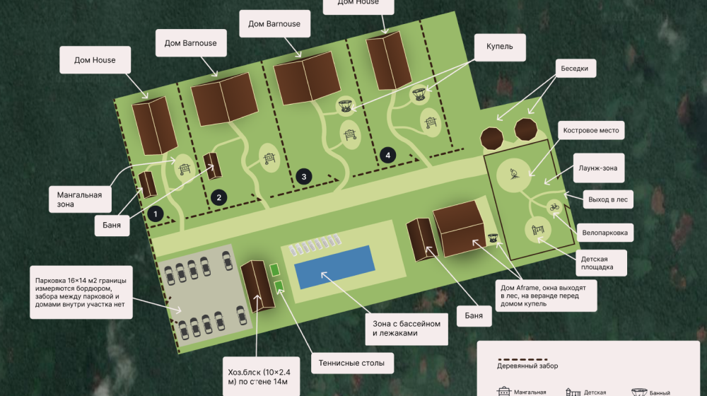
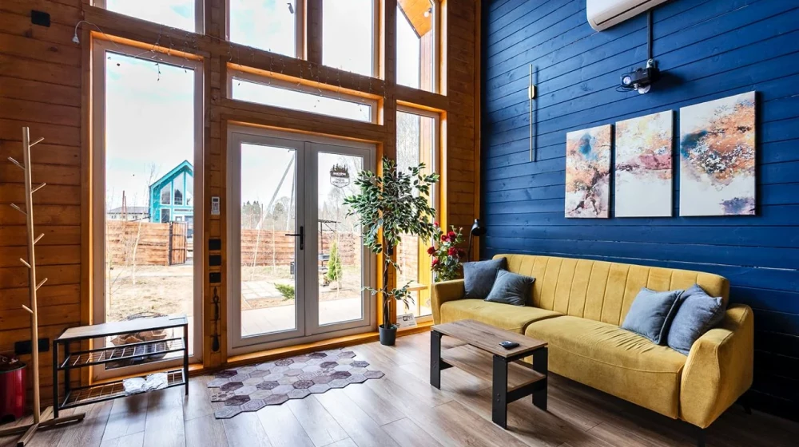
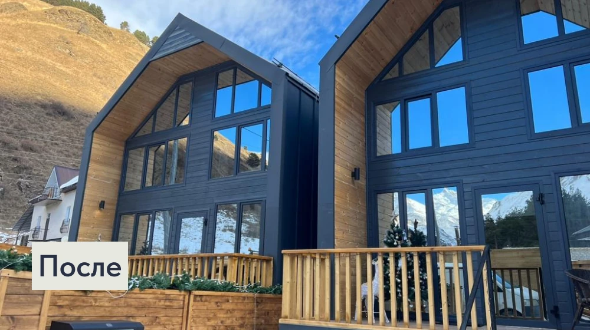
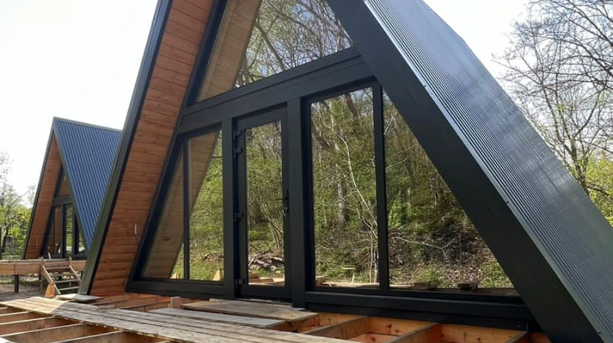
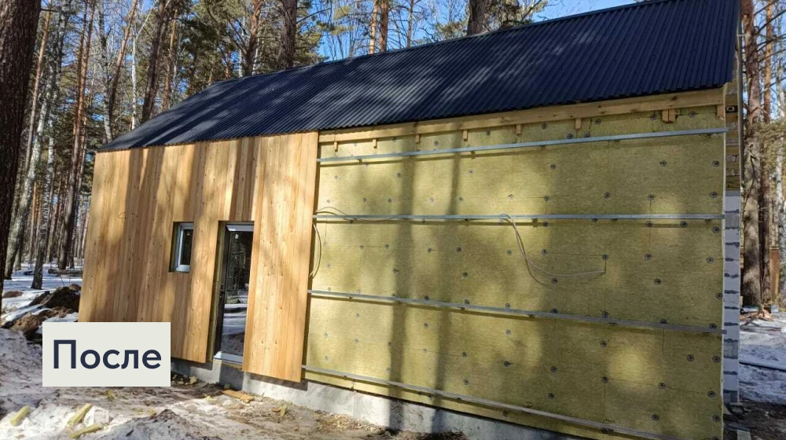

От интереса к своему проекту
Новые сценарии сайта
Знакомый стиль. Понятная задача обращения. Подходящие примеры работы и подборка домов для будущей базы.

01
Главная: от этапа к кейсу
Выберите ситуацию — пример проекта и первый шаг меняются вместе с ней.
Посмотреть в демо →
02
Форма под вашу задачу
Тема обращения уже выбрана. Короткая форма и следующий шаг после неё.
Посмотреть в демо →
03
Результат проектирования
Просмотр опубликованного примера работы и структуры документов.
Посмотреть в демо →
04
Кейсы по ситуации
Найдите похожий проект: небольшой участок, запуск, реконструкция или развитие.
Посмотреть в демо →
05
Подборка домов на стройку
Добавьте несколько моделей, задайте количество и комплектацию.
Посмотреть в демо →
06
Из статьи — к своей задаче
Предложение по теме статьи, окно через восемь секунд и понятное обращение.
Посмотреть в демо →Основной сайт не изменён. В демо отключены отправка заявок, загрузка файлов и оформление заказов.